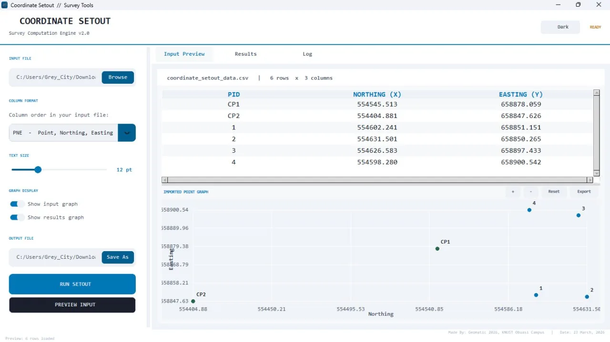
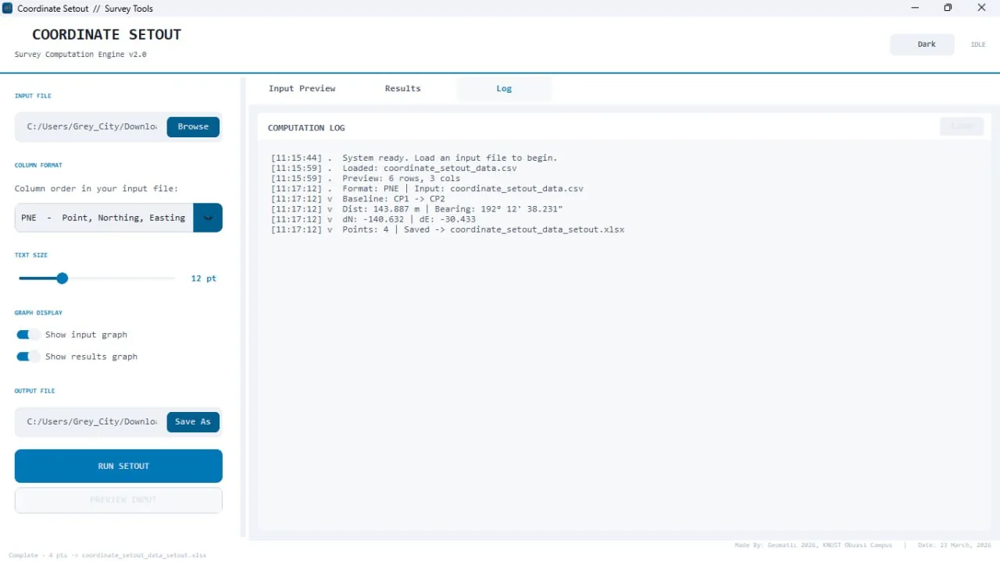

GIS & remote sensing
Digitisation, georeferencing, LULC classification and map production.
AdvancedBSc Geomatic Engineering · KNUST
Geomatic Engineer | GIS & Remote Sensing
Currently turning spatial data into evidence
01 / About me
I’m Kwadwo Agyei, a final-year Geomatic Engineering student at KNUST who enjoys asking better questions about the places people live, build and depend on.
I work with maps, satellite-derived information and field observations to trace change on the ground. Whether I am georeferencing a planning dataset, digitising building footprints or exploring land-cover patterns, I care about data that can be checked, understood and used.
My interest in software grew from the same instinct: make technical work more useful. That has led me to build with Python and Flutter while continuing to learn from surveying practice, GIS workflows and collaborative mapping projects.
At a glance
A Geomatics student eager to apply my skills and create impactful geospatial solutions.
02 / Technical toolkit
Digitisation, georeferencing, LULC classification and map production.
AdvancedPractical geospatial and offline-first tools, built with clean architecture.
IntermediateField data capture, baseline calculations and setting-out.
AdvancedTurning imagery and field data into checked, usable evidence.
Advanced03 / Featured projects & research
A selection of academic and personal work across GIS, mapping, practical geospatial tools and final-year research.
04 / From field to map
Sep — Nov 2024
Used AutoCAD and QGIS in planning and mapping tasks, including georeferencing and digitising about nine spatial datasets for planning work.
Nov — Dec 2025
Supported field and office-based geomatic and surveying operations, building a clearer understanding of how measurements travel from site work into usable engineering information.
2024 — 2026
Programming Tutor at Geocoders Club; Editor-in-Chief at AGES KNUST Main; Organizing Secretary at Church of Christ, KNUST; and team lead for Colouring Ghana.
05 / Education
September 2022 — Expected February 2027
06 / Awards & certifications
Certificate
Professional certification
Programme · 2025
Examination
Course · 2026
07 / Contact
I’m open to graduate opportunities, collaborative mapping work and conversations about how geospatial technology can answer useful local questions.
Available for graduate and collaborative opportunities
kwadwoagyei962@gmail.com ↗| Year | Training px | Validation px | Overall accuracy | Kappa |
|---|---|---|---|---|
| 2018 | 11,480 | 4,830 | 98.05% | 0.976 |
| 2020 | 11,418 | 4,899 | 97.98% | 0.975 |
| 2022 | 20,201 | 8,646 | 98.47% | 0.982 |
| 2024 | 31,954 | 13,604 | 98.67% | 0.984 |

